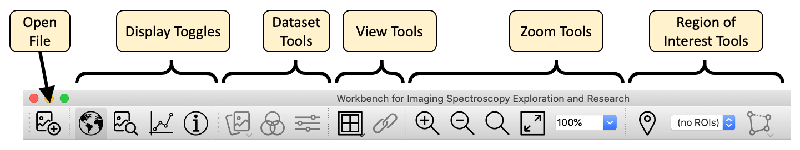
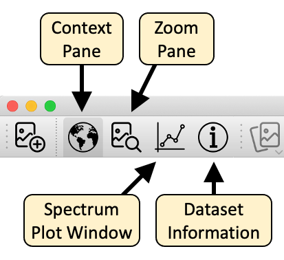
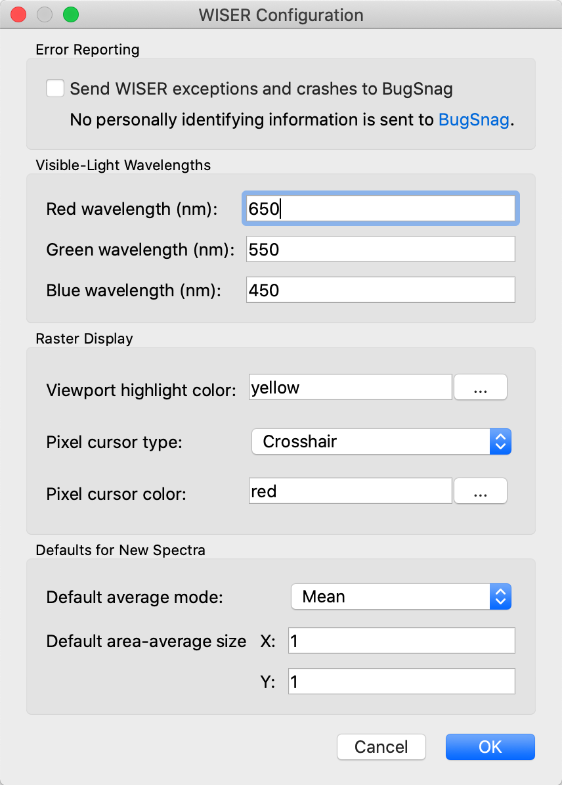
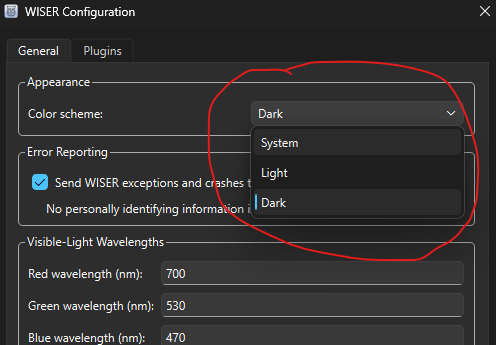
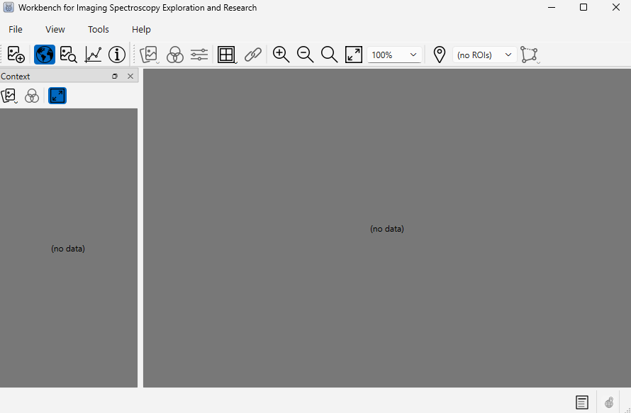
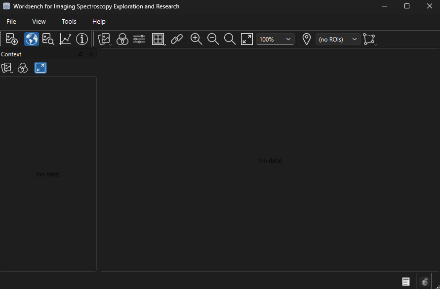
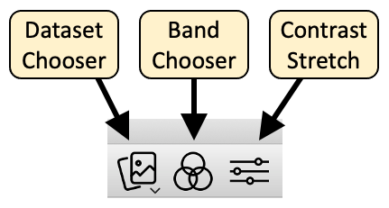

Interface Overview#
A tour of the main window and the settings that apply across every tool.
Tip
To use these controls rather than read about them, start with Tutorial 1 — Your First Scene, which uses the panes, band chooser and contrast stretch on real data.
The main window#
When WISER starts, no data is loaded and both display areas read (no data):

WISER shows raster data in several panes at different magnifications. The Context Pane starts on the left side of the window and shows the raster data “scaled out,” so that one or both dimensions fit within the pane. The Main Window is the primary viewing area, for more detailed work with the raster data, and can zoom up to 1600%.
Across the top of the Main Window is the Main Toolbar, which holds the tools for working with raster data:


The buttons marked “Display Toggles” show and hide the tools for working with spectral data:


The sections below describe each one.
NOTE: You can add your own tools to WISER through its plugin API. See Extending WISER.
WISER Configuration#
Settings shared by all tools are in the configuration dialog, opened from the menu bar. On macOS, choose “WISER” -> “Preferences”. On Windows, choose File ▸ Settings….


WISER saves these settings to disk, so you set them once. The sections below describe some of them.
Appearance and Color Scheme#
WISER can be shown in a light or a dark color scheme. The Color scheme setting, in the Appearance group at the top of the configuration dialog, controls this:


There are three choices:
System (the default) — WISER follows your operating system’s light/dark setting, and automatically updates if you change your OS theme.
Light — always use the light color scheme, regardless of the OS setting.
Dark — always use the dark color scheme, regardless of the OS setting.
WISER adjusts the window colors, the toolbar icons and the selection highlight so that everything stays legible in either scheme. The startup window shown while WISER loads follows the same setting. The change is applied when you click OK, and is remembered between sessions.




WISER Crash and Error Reporting#
WISER can send crash reports to an online service called BugSnag. This option, Send WISER exceptions and crashes to BugSnag, is off by default. Turning it on sends errors and crashes to the developers automatically, so they can find and fix them. No personally identifying information is sent to BugSnag.
Wavelengths for Red/Green/Blue Colors#
For datasets that cover visible wavelengths, WISER can choose “true-color” bands close to the wavelengths of red, green and blue light. Different datasets and instruments may need different values for “red”, “green” and “blue”, so you can set these wavelengths yourself.
Viewing an Image#
Here is WISER after loading AVIRIS data over the Caltech campus, with every pane shown:

In this image, the display toggle buttons on the main toolbar have turned on every pane: the Context pane, the main window, the Zoom pane, the Spectrum Plot and the Dataset Info pane.
Every pane is dockable. You can move or resize it within the WISER window, or undock it so it appears as a separate window.
The main window marks the area shown in the Zoom pane, and the Context pane marks the area shown in the main window. (Tip: you can change the color of this viewport highlight in the WISER configuration dialog.) Clicking or scrolling in any display pane updates the others. Clicking in the main window or the Zoom pane plots that pixel’s spectrum in the Spectrum Plot.
Toolbars#
Every raster display area has its own toolbar. The main toolbar carries all of these; the context and zoom panes carry the subset that applies to them.


Control |
Does |
|---|---|
Select dataset to view |
Switches which loaded dataset the pane shows |
Band chooser |
RGB or grayscale, which bands, and the colormap — see Display and Contrast Stretch |
Stretch builder |
Opens the stretch builder for the displayed bands |
Split/unsplit the main view |
Splits the main window into panels; the dataset, band and stretch controls then move above each panel |
Link view scrolling |
Ties panning and zooming across panels. Displayed datasets must overlap on the ground, or have the same width and height if not georeferenced |
Zoom in, Zoom out, Zoom to fit, Zoom to actual size |
Navigation. The percentage box takes a value directly |
Add new Region of Interest and Add selection to current ROI |
|
ROI dropdown |
Chooses which ROI a new selection is added to |
The status bar#
The bar along the bottom reports, left to right:
A message area, with status messages and the instructions for whichever selection tool is active. Read it when a shape is not behaving.
The display values for each color channel at the pixel under the cursor
The pixel coordinate, as
(x, y)The ground coordinate, when the dataset is georeferenced
The two buttons at the far right open the Dataset Info pane and the Activity Monitor.
The Activity Monitor#
Analyses, filters and band-math jobs run in the background so the interface stays usable. The Activity Monitor is where you watch them.
It lists Active Tasks with a progress bar and a cancel button each, and keeps a collapsible Finished Tasks list below. Each row names the task and the parameters it was given (the dataset, the component count, the expression) which makes it a usable record of what produced which output.
Failed tasks stay in the list with their error message, so a run that produced no dataset can be diagnosed rather than guessed at.
Open it from the button at the right of the status bar.
The Dataset Info pane#
The Dataset Info display toggle shows the header metadata of every loaded dataset: dimensions, band count, data type, wavelengths, bad-band list, data ignore value, coordinate reference system and description.
Check it whenever a tool behaves unexpectedly. Most surprises are visible here: a missing wavelength axis, an unset data ignore value, or bands you did not know were flagged.
Editing a dataset#
Right-click an image and choose Edit dataset… to change a dataset’s metadata in place, without writing a new file: its name, description, data ignore value, wavelengths, bad-band list and default display bands.
This is the fix for a file whose header is wrong or incomplete — a cube with no
wavelengths, or one whose nodata value was never declared, so WISER treats
-9999 as a real measurement.
To write the change to disk, use Save as… (see Saving and Exporting).
Where to go next#
Tutorial 1 — Your First Scene — these controls used on real data
Opening Data Files — formats and troubleshooting
Display and Contrast Stretch — bands, colormaps, grid view, stretches
Extending WISER — add your own tools to these menus